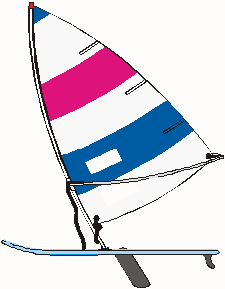
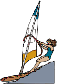
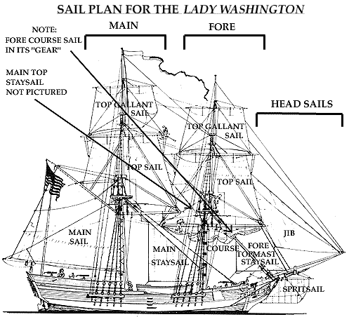
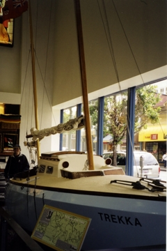
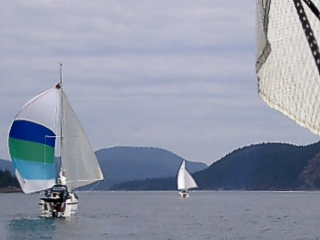
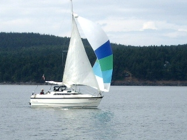
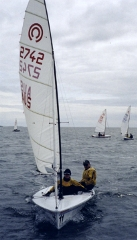
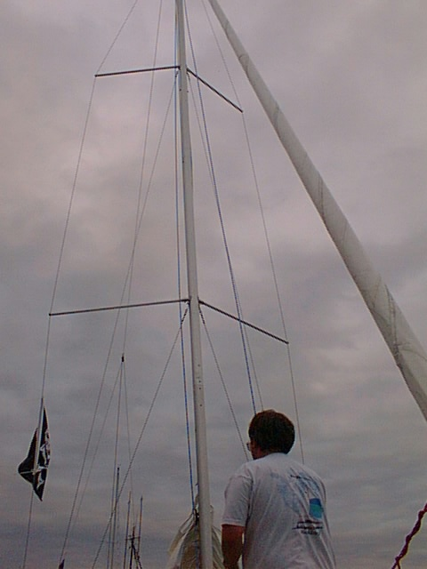
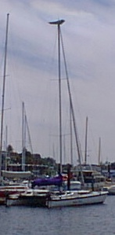
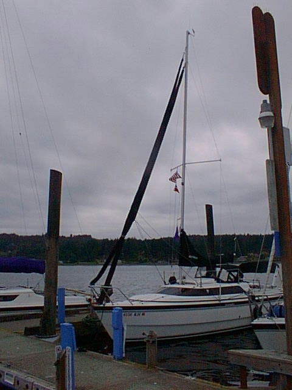

| Main | CB | FB | Fast | Size | Keel | Ballast | Point | Tall | Race | Lean | Ocean |
|
|
Note that in the days of commercial |
  After chartering a tall ship (the Lady
Washington) and studying 20 or so of her kind, it is my opinion that
the
rational for tall masts comes from commerical sail boat operations in the
18th century. The sail boats of this era were designed for a
particular cargo and coastline, which justified the rigging. Click on the
picture to the left to start
a slide show.
Hold your mouse over the slides to display captions. To search this site enter a word or phrase below:
|
On the east coast of the United States the warming and cooling land mass does not create winds that fully overcome the ocean weather or trade winds that a very tall mast can capture. Hence, for some commerical sailing vessels following the same courses trip after trip the taller masts were desirable even though the larger sails required additional crew to handle them.
The Lady Washington was one such trading vessel. She was built for duty on the east coast of the Americas as a tall masted sloop and was converted to a split rig (two relatively shorter masts) in 1787, about 20 years later. Ted Brewer has discovered that the vessel was built in Essex, Connecticut and crossed the Atlantic at least once bringing Irish immigrants to the New World. She was later sailed to Hong Kong where the shorter masts and easier to handle sails were installed. The Lady Washington was the first US built vessel to circumnavigate the globe. Her furthest aft sail is called a spanker on European built square riggers. American sailors in her time prefered to call her kind brig-like or brigantine, which is appropriate given that what looks like a spanker is the largest and hence really the main sail. Most sailors today call her (incorrectly) a brig.

It is likely that the special-route trading vessels, like the sloop Lady Washington (the brig rig is pictured), contributed to the belief that a tall masted vessel points better than a short one. This is not correct. The tall masted vessel on the east coast of America could reach and therefore be sailing different wind than others.Furthermore, the argument that in light wind conditions a tall mast will catch wind that is more powerful than the wind scraping the surface of the water ignores the the notion that putting up all cloth in light wind (especially top gallant sails) will produce drag that is not overcome when there isn't enough wind to lift them. The Lady's rig was split prior to circumnavigating likely owing to that notion and recognition that a mainsail of several thousand square feet was difficult to handle.
On the west coast of America, and in most popular cruising areas, a mast can not be built tall enough to get observations of better pointing. The winds for all practical purposes, other that the east coast of America and areas like that coast, are pretty much coming from the same direction at the top of the tall mast as they are at the boom. Hence there is no advantage for the tall masted recreational vessel over a similar vessel with a shorter mast but same sail area. In fact there is disadvantage coming from the higher weight aloft of the tall mast rigging, and cloth which reduces stability. Advantages come from sail shape, not the height of the mast, assuming the wind isn't obstructed.Most boats carry sails that perform well enough to satisfy on trade-wind routes where three-quarters of the time the wind may be aft of 110 degrees apparent and there are opportunities for flying symetrically shaped sails, like square sails and spinnakers.
Spinnakers are usually made of a light material that doesn't require a lot of energy to lift. While a tall mast may allow a larger spinnaker to be flown than otherwize, carefull tending by crew is usually necessary to keep the sail from collapsing once the boat gains speed and the apparent wind approaches zero. In addition, should the spinnaker fill to a side, rather than ahead, owing to a swell or steerage problem, its large size can knock down the vessel. For all practial purpose, spinnakers are not favored on cruising sailboats. Instead a large asymetrical sail made of a spinnaker like fabric will be used. These are not true spinnakers but rather a large Genoa which on some contemporay boats can be use for upwind work, in light air, especially if mounted on roller furling.
While a contemporary vessel may sail to weather in normal wind, few traditional cruising boats do. Such work is required one-third of the time after leaving the tropics for the temperate latitudes and motor assistance eases the work.In the higher latitudes, wind ahead of the beam may come more than half the time with over Force 7 wind about one-third of the time. In Force 7 wind, the apparant wind on a modern sloop or multihull can be forward of the beam, even when sailing down the true wind. This is the defining characteristic of high-performance sailing. Unless the captain is in a hurry, not all the cloth will be flown in Force 7 wind, on a modern cruiser, and hence there is no advantage to a tall mast. Force 7 wind is often small craft warning conditions. Unlike most small power craft, small sailing cruisers are not usually open to the sea, so they are more suitable for offshore or rough water operation. Force 7 wind usually is just fine for a small cruising sailboat. Many heavy keel sailboaters consider Force 7 wind ideal for flying all the cloth. However, on modern and small cruisers, the optimum heel is usually lost unless a sail reduction is made. In other words the vessel is actually faster with less sail in these conditions.
Given an itinerary that foregoes trailering or containering (which is the smart choice,from an investment protection viewpoint if nothing else) a boat should, for safety reasons if nothing else, be capable of efficient passage making to weather in 20-to-30-knot winds and the accompanying seas. That translates in to motoring/ motor assisted sailing for most monohull contemporary cruisers. Most high performance monohulls and multihull cruisers are capable of close reaches in Force 7 winds without motor use.
Mac26x sail boats are quite happy going to weather in Force 7 conditions (28 - 33 MPH) without motor assistance and will self steer to weather. This is a testament to their suitability as ocean going vessels. Many ocean high-performance single-handed race vessels must make use of sophisticated auto pilot electronics because each wave and swell causes a roll which changes the shape of the hull presented to the water and with that changing amounts of lee or weather helm. Most of the canting keel ocean racers appear incapable of making an up course in Force 7 and above. Those are not suitable for ocean crossing by my way of thinking unless the crossing is all down wind and the intent is to container the vessel for the return passage.
Owing to sphere like qualities forward of the beam, refered to as a cods head by traditional sailors and powerboat belly by the manufacturer, conflicting waves from wind, swell and shoal, do not roll a Mac26x from side to side drunkenly causing significant upwind steering problems while under sail. A spherical form will respond the same way regardless of conflict. It will lift and drop rather than roll and pitch and lift and drop.
Chapman's recognizes a sphere as the perfect hull form with a tube form (think of the outer hulls on the trimaran in Water World) being second best. The Mac26x has a sphere form forward and presents a racing canoe tube-like form to the water when on heel in the aft section. The give in the rigging also contributes to making the Mac26x an ideal upwind ocean sailboat. While perhaps not gentlemanly you can let fly large headsails both upwind and downwind. The Mac26x is not just a down wind flyer. She is a ligitimate pocket rocket when sailed in the modern style.
Denton Moore remembers Erik Hiscock stating that 400 square feet was all the sail he cared to handle. Murrelet currently carries 357 square feet (Genoa + main) but can carry 501 (spinnaker + main) and even more. But I always start off with the main reefed. The provision of more and more sail area on lighter and lighter trailerable monohulls has created the need to carry to many active crew members in order to sail with panache and grace. To see this watch the wild ride of the Melges with crews of two.
Perry states " You can always chase big rig numbers but it just means that in less than experienced hands the boat will get overpowered more quickly and people will get scared." A taller mast with a more powerfull main sail (owing to mast rotation) as introduced with the Mac26m will do little good for those new to the sport, unless the m can be converted to a multihull or be weighted down with internal ballast or rail meat therby providing more stability. If all cloth is flown on the tall mast and the mast is allowed to rotate for full power in normal wind this will mostly scare new boaters from sailing. I suspect Perry defines a bad sail boat as one that scares new boaters from sailing. According to Perry, an SA/D of 24 in a monohull is enough to allow the boat to be sailed aggressively in light air, while not quickly becoming overpowered. Regarding rail meat, the complexity of organizing crew and dealing with the personalities aboard appeals to few and most cruising sailboats are actively crewed by two owing to that.
The MacGregor 26 sailboats that were not intended to to be powered by 50+ hp motors are known to be fast sail boats for their size in light air. They are tippy in high moderate conditions when crewed by novices however and today reviewers describe the vessels as having masts not quite tall enough for light wind and two tall for moderate and high wind. MacGregor Yachts is type cast as a manufacturer of vessels for first time boat owners though given MacGregor Yachts success in 65 foot ULDBs, this cast just doesn't fit the mold. When crewed properly by 4, I suspect the early 26 sailboats are not any more tippy than the Lady Washington, which BTW, can really go while heeling noticably in high moderate wind (few white caps) flying main sail, the two top sails, and jib. In films the square rigger is depicted as having wheel stearing. She is actually controlled by a tiller like the early 26 sailboats from MacGregor Yachts. Tillers have an advantage over wheels for bouy racing because pumping them to bring the vessel around is allowed - this action also being used to provide more manuverablity on square riggers.No boat of her size has advantage over the X owing to the numbers of them in use for potential world-wide one-design racing. When confronted with the notion that other 26 models have masts that are correct only for low normal wind, the engineering wonder in the X rig is demonstrated. Here is a monohull vessel that really can use the lighter stronger characteristics of fiberglass composits without negating those benefits with internal or foil attached solid weight or capsize risk inducing wide beam. A crew of four is recommended for racing but the boat is well handled by one when an intermediate reef is used in normal wind, a 50 hp engine is mounted, and the Genoa is on roller furling. In otherwords when rigged like a Mac19.

While one might argue that the X standard mast is to tall, I find that top 1/8th very usefull in bettering Thunderbirds in light wind. In light wind ballast can be blown for fast sailing. Unlike the M mast the X uses a flexible mast not unlike the mast used by Trekka. This allows the top to spill wind quickly should the wind overpower and also causes the headsail to be flattened which depowers it. It is interesting to note that Trekka, though of wood construction, also has a layer (or more) of fiberglass. In addition the designer recommended a more X like hull (IE twin keel) and fractional sloop (rather than yawl) rigging. In 1954, for self handling reasons, the yawl rigging was installed and a shorter main mast that allowed sailing under twins installed.
Trekka ran twin fore sails in 60 knot winds between Seattle and San Francisco and I would like to run spinnaker + Genoa to see how Murrelet handles. This technique involves up to 556 square feet with both the head sails on furlers, no booms. Mac26x vessels sail bare polled and I hope never to be caught in 60 knot winds but I do like the tradition represented by twin head (actually fore) sails and several Mac26x cruisers have them now.It is nice to see the old sailing style implemented on a modern cruiser. Sailing under twins is not usually faster than sailing with headsail and main but this is not the case with Mac26x cruisers because the main sail is not the sail with the most power. The head sail is the sail cut for power on the X and it is also the sail that is in clear air. Many modern designs are making the head sail the larger and more powerful cut in the sail plan with roller furling making this especially desirable. Some Mac26x cruisers sport two sets of roller furlers the second being mounted to the bow pulpet and about halfway up the top 1/8 fraction of the mast. The top 1/8 fraction of the mast is not used, otherwize, in the twin headsail configuration on a Mac26x.
The twin fore sail configuration requires the use of a backstay. It
works
surprisingly well and supports the notion that Mac26x sailors should
consider the Genoa as the main sail in the rig. This is kind of like
identifying the spanker as the main sail on the Lady Washington. The
practial application of this knowledge is that it turns the sail boat
primers around - especially when it comes to roller furled sail trimming
for speed.


One explanation for tall rigs outperforming standard rigs on long close hauls involves the same aspect ratio argument used for the foils (rudders and centerboard). Because sails on a shorter mast can have the exact same aspect ratio, however. This explanation is faulty. This argument assumes that tall rigs do not use 150 Genoa, but rather the standard jib. It fails to recognize that immediately out of a tack the 150 Genoa, short masted vessels, will point better because of the power in the Genoa which creates the speed needed to point and that a Genoa can wrap around shrouds in a way that thrust is more to windward. On long upwind legs the tall rig would not be better than one with similar sails on a shorter mast unless wind from a different direction could be reached, as described above.Tall masts and rotating wing masts (such as those on the Mac26m) are less able to support Genoas on roller furling. Rather than address failures in the furling mechanisms, tall masted and rotating wing sailboat dealers have found it convienent to define a "new breed of vessels" that don't believe in Genoas. This allows fitting new vessels with lesser foresails in jib only size on less substantial furling mechanisms than necessary for a Genoa. Those believing most in tall masts and rotating masts are reluctant to see the advantages of roller furling and may even recommend hank ons in spite of the large number of ocean crews who believe every cruising vessel should fitted out in rollers - safety being the main reason. Unlike a main sail, rolled head sails can be made of the highest quality laminates without being damaged each time they are retracted and they can be retracted quickly when the wind starts to over power.
While owners may state otherwise, speed is the largest component of luxury. Charter operators know this to be true. In 2003, the worlds largest sailing sloop was launched in Thailand to complete with high end speedy motor yachts in the Mediterranean charter business. She carries 12 guests and has a hull speed of 20 knots. To reach this speed her overall length is 247 feet, 56 feet smaller than Tatoosh, a motor yacht based in Puget Sound. As discussed, hull length determines maximum speed for a displacement vessel.
The Mirabella V is constructed of hand layed fiberglass composite, not unlike a Mac26x, in a mold, no plug. Her mast will be the tallest in the world - to big to fit under any bridge, 290 feet above the water. The mast is constructed using a vacuum bag methodology, like a J boat hull.
Because by-the-math the tall rig will allow Mirabella V to sail down wind at 20 knots, many will see this as indication that a tall mast is desirable. However, the tall rig serves more as a marketing device, not only giving the vessel an attractive-to-charter-purchaser high-performance SA/D ratio but, in this case, getting her a mention in the Guinness Book of Records.
Her main will be roached, not unlike a Mac26m but she has a backstay like a Mac26x. This combination means that to tack the main must be dropped so that the roached portion of the sail will clear. Many Ocean 60 race boats operate similarly.
I suspect that in operation the Mirabella V's main will be reefed to a point allowing the roached part of the main to clear the backstay without worry. Because the motors are less expensive than the Doyle main sail (same brand as a Mac26x), the main will drop automatically should crew find wind a bit to fun. http://mirabella-yachts.com/mirabella5/
The boat will have a Genoa. However, roller furler innovation is necessary for deployment. One of the reasons that some tall masted sailboats forgo Genoa's is that some roller furlers are not strong enough to support the load.
Mirabella V's designers are to be applauded in addressing the issue with engineering rather than marketing.
There are few components on a modern sailboat that do not have impact on others and hence an understanding of just how suitable the X rig is to its hull and how MacGregor Yachts determined that is useful in refuting the notion that a tall ridged mast like the Ms is better.
During the 1970s and 1980s and owing to design rules, it was adventageous to rig ocean racing sailboats in a mast head configuration rather than fractionally, like the M and X and modern designs. This was because the mathematics used to class the boats for racing was based on a standard 100 jib but there was nothing preventing the use of larger sized fore sails while racing. The head sail, the Genoa, became the sail generating the most power on these boats. The main sails of this era, became secondary.

In 2005, Bill Schanen expresses his delight that the current trend in sail boat rigging is to restore the main sail as the primary sail. The Mac26M supports this trend. In his article on page 6 of the May 2005 Sailing magazine, however, he not convincing in defending the trend. He makes excellent points about the buzz term "High Aspect" but neglects to mention the greatest benefit to having a high aspect ratio mainsail. That is a shorter boom that is less likely to wack the helmsman.
The film Tease was analyzed frame by frame at the point where the boom of a Mac26x is to have been used to knock the operator of the vessel into the water. Because the foot of the high aspect ratio mainsail allowed a shorter boom, it is imposible for a Mac26x boom to be so used. This single safety feature should make designers rethink the return of main sails that require longer booms.
Schanen mentions other problems with making the main larger but he neglects to point out that the head sail is in clear air more often than the main sail and that modern sail fabrics are damaged every time they are dropped onto a boom. There is a solution, that being roller boom furling, but even here, a short boom will always be more desirable from a safety standpoint. Sailors are wacked overboard far more frequently than they fall overboard, and if wacked unconscious do not have the opportunity of inflating a life vest. For this reason all sailboats should carry self inflating life vests. The trend away from spinnakers and to asymetrics is directly related. A true spinnaker requires a spar that is the most dangerous piece of equipment aboard. Quite a few experienced sailors will have nothing to do with a true spinnacker for that reason and because asemetrics allow greater ability to alter course on down wind runs. The newest generation J-boats are designed without the bow sprit of a traditional J-boat to reflect the fact that experienced sailors rarely extend the retractable sprits provided, which are used for spannakers.
On the Mac26x, the back winding of the main by spill off from the Genoa is acceptable because the main is the smaller sail. On a boat where the main source of power really is the main sail, or when the head sail is rolled in to jib and smaller size, this would not be the case.
******Both Cardwell in his book and Roger in the X brochure point out that it can take over 2500 lbs per square to delaminate the resin bonds in well built sailboat hull. Roger flat out states that it will take over 2500 lbs in the Mac26x. Prior to 1985 manufacturers of trailerable sailboats used solid ballast to provide stability and this negated the advantage of fiberglass that brought us ULDBs - Ultra Light Displacement Boats - like the Mac65. Fiberglass, owing to its light weight and strength is better than other material (including wood) that would allow trailering a boat larger than a Catalina 22.
In 1985 Roger introduced water ballast to the Americas and controversy raged. It was known at this time that the German Dehler 25 designer's move to water ballast was for cost cutting and not the performance reasons of today's water ballasted ocean racers. The German Dehler 25s were produced from 1984 to 1991.
The MacGregor trailerable boats of this time are remarkably light boats and the water ballast tank was molded into the hull so they are also strong vessels but review publications such as Practical Sailor tended to focus on the cost saving construction method, implying that water ballast use de facto meant low quality construction.
Practical Sailor reviewers also recognized that water ballast on the centerline of the Mac26s and Mac26d could not provide the stability that off-centerline water ballast could. In other words they questioned the effectiveness of water ballast that didn't extend as far as possible to the hull side in a vessel thin like a Mac65. During this time wide beam became popular to compensate for loss of stability owing to lighter hull material. Of course the wider the beam the less trailerable and the greater the capsize risk ratio. Heavier trailerable wooden boats with flat hulls like X cruisers were produced during this time. These hulls were capable of true planing and easy to trailer because they could sit low in the trailers facilitating launch and recovery, but they never were more than 18 feet in length because when larger they would flex and owing to the flex were unable to break from the suction of the sea and plane. They did use water ballast and some were twin keeled. A lot of innovation still shows up in wooden boat designs.
In 1995 MacGregor Yachts launched the Mac26x. Superior stability came from multiple sources, none of those being wide beam.
First, and likely owing to points made by Practical Sailor, water ballast was moved off the centerline and there was initially 300 lbs more of it than in other 26 models; The Mac26x is MacGregor Yachts first off centerline water ballasted vessel.
Second, solid ballast was added to the centerline above foils in the form of a heavy outboard engine and associated gas tanks.
Third, according to dealers reporting to Cardwell, most of the additional 600 lps dry weight of the X over other 26 models is attributable to an additional layer of fiberglass that was added to the hull of the Mac26x to absorb the pounding and reduce the vibrations from a large engine.
When engines became lighter (1998) Macgregor yachts extended the water ballast tank to the stern to adjust for that weight reduction, this in combination with the hard side chines of the vessel making more obvious the X boat's twin keel nature. The X not only has the stability of a keel boat, she is literally a shallow twin keeled boat, like was proposed for Trekka.
Today a cruise from Salcombe across the English Channel to the canals of France then through the Bay of Biscay to more canals and then the Mediterranean and on to La Manga del Mar Menor (close to Cartagena) without the benefit of a centerboard for much of it is normal use for X boats. Same is true for Alaska Inside Passage work.
The other major source of stability is of course in the X boats rigging which best I can tell is similar to the other non-M rigs. But why should the rigging be similar to other 26 models? Perhaps rigging similar to a Tasar, which has a similar hull form to the X would be better. IE rigging like the Ms. The answer is in the water ballast - or really lack there of. When the X water ballast is jettisoned, the appropriate rigging is for a less stable vessel like the 26 classics. I will even go as far as saying the appropriate rigging is more Mac19 like - in otherwords shorter masthead rig or intermediately reefed Mac26x on a flexable, like a sailing surf board, mast.
The real revolution in the Mac26x design is that by using fiberglass and water ballast together a boat could be built rough and ready for ocean sailing and high speed motoring that is ridged enough for planing under sail while ballasted but also suitable for light wind sailing because the water ballast can be removed making the vessel a ULDB, like the Mac65. This was done without making the boat beamy (which reduces its trailerabilty and increases her capsize ratio) and at a length 6 to 9 feet longer than possible in wood.
As seen below it is possible to purchase a Mac26x tall rig. It is important to note that the tall rig does not necessarily add sail area. The tall mast can carry cloth that is less vulnerable to vessels with the weather guage - ie vessels that may obstruct some wind because they purposfully blanket the tall rigged vessel, as might be the case in a race.
Murrelet's stays and shrouds remain as they were tuned by the dealer. I expect that racer wannabes are in error by tightening Mac26x rigging and modifying/ replacing the mast and mast hardware and coveting masthead vertical pole sloop design over the Mac26x standard back raked fractional rig. When I race Murrelet, I may reduce the mast rake (from 8 degrees to 4) and add tackle to bow it back again but that is about it. It is important to note that a Mac26x with a fore sail furler, like Murrelet's, does not require additional stays when fitted with a solid boom vang which, in concert with the boom, will support the mast if the furler breaks loose.
 |
 |
 |
"The least glance an history will turn up a plethora of short-masted, unstayed rigs that work better for recreational purposes than the present tall rigs that were derived from misbegotten rating rules." Every Mac26x owner needs a copy of the Phil Bolger and Susanne Altenburger article.
|
|
|
|
|
Frank & Lisa Mighetto - 1260 NE 69th St. Seattle, WA 98115 - (206) 525-1458 voice and fax
mighetto@eskimo.com - Internet email address
mighetto@compuserve.com - Internet email address or 72154,3467 from within Compuserve